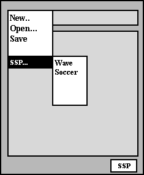

| [Table of Contents] [Previous:
Popup Content] [Next: Persistence and Sharing]
Feature Owner: Dave
Hyatt
Authors: Ian
Oeschger and Dave Hyatt
XUL Files and XUL Overlays
Overlays are XUL files used to describe extra content in the UI. Though
overlays often define UI elements that have been added as a result of an
update or enhancement of some kind, they can be used in many different
ways. Overlays provide a general mechanism for:
-
adding UI for additional components, as described in the example above
-
overriding small pieces of a XUL file without having to resupply the whole
UI
-
reusing particular pieces of the UI
XUL overlays were designed as a replacement for XUL fragments, which are
now deprecated. XUL files and overlays work together
to describe a single master document. Though there is no formal restriction
on what kind of XUL content is located in "base" XUL files and what kind
should be put in overlays, XUL overlays generally define items that are
not present in the basic versions of the UI, such as additional components.
When plug-ins, browser extensions, or other applications provide new UI
elements to the browser, these elements should be defined in overlay files.
The installation of a media plug-in, for example, may add new icons and
menu items to the interface:

In the navigatorOverlay.xul file or in a separate navigatorSSPOverlay.xul
file (where navigator.xul defines the basic UI for the navigator
package), these new plug-in elements would be defined as a collection of
elements or subtrees:
<menuitem name="Super Stream Player"/>
<menupopup name="SS Favorites">
<menuitem name="Wave" src="mavericks.ssp"/>
<menuitem name="Soccer" src="brazil_soccer.ssp"/>
</menupopup>
<titledbutton id="SSP" crop="right" flex="1"
value="&SSButton.label;" onclick="FireSSP()"/>
Overlays and ID Attributes
The layout engine uses the ID attribute to determine where the elements
in the overlay file will be merged. Use the same IDs in the base XUL file
and
the XUL overlay; otherwise, the new elements will not appear at all. In
the base file, the parent nodes for the overlay elements must be ID'd if
they have not been already. For example, the <menu> element in the following
XUL subtree should be the parent of the Super Stream Player menu item,
so it has been given the ID "file_menu":
<menu id="file_menu">
<menuitem name="New"/>
<menuitem name="Open"/>
<menuitem name="Save"/>
<menuitem name="Close"/>
</menu>
In the overlay file, you can "sync up" the new item by making it the child
of a tag with the same ID in the overlay file. The layout engine
takes the elements directly under the <overlay> tag with IDs and merges
them with the corresponding nodes in the base file. The complete XUL overlay
file for adding the single Super Stream Player menu item from the example
above is as follows:
<xml version="1.0"?>
<overlay id="singleItemEx"
xmlns:html="http://www.w3.org/TR/REC-html40"
xmlns="http:www.mozilla.org/keymaster/gatekeeper/there.is.only.xul">
<menu id="file_menu">
<menuitem name="Super Stream Player"/>
</menu>
</overlay>
Note that below <menu> in the base file and <overlay> in the overlay
file, the subtrees are equivalent. Merged items can be arbitrarily nested
subtrees: new popup menus may contain other popup submenus, extra toolbars
can overlay existing toolbars or appear beneath them, as the Personal Toolbar
does below the Location Bar in Netscape's Communicator, etc. As long as
the IDs of the elements appearing below the <overlay> tag in the overlay
file and tag with the same ID in the base file, overlays support the merging
of any valid subtree.
Loading Overlays
Overlays can be loaded explicitly or dynamically. When you
load an overlay explicitly, it means that you intend to make it available
every time the base file is loaded. Since one of the main purposes of overlays
is to provide UI for additions or components to the basic package, explicit
loading can be somewhat problematic when the overlay defines optional UI
elements.
Loading Overlays Explicitly
A processing instruction is used to load overlay files explicitly into
the master document. Inserting the following processing instruction before
the DOCTYPE declaration in a base file tells the layout engine to load
the named overlay file:
<?xml-overlay href="chrome://component/content/componentOverlay.xul"?>
where component is the name of the package being overlayed (e.g.
"chrome://navigator/content/navigatorOverlay.xul").
The layout engine loads any overlay files and then flows the resulting
XUL document, so problems associated with incremental insertion in menus,
boxes, tables, and forms are avoided. Any number of overlays can be loaded
into a master document, and an overlay can also load other overlays. Because
an overlay is superimposed on the master document, there are no ambiguities
relating to scoping of style sheets of scripts. Style sheets and scripts
loaded by the overlay simply apply to the entire master document.
Loading Overlays Dynamically
The chrome registry makes it possible to load XUL overlays dynamically
-- or only when necessary. The chrome registry, which is a special RDF
datasource into which user-specific information is persisted,
or stored, contains information about the components or additional packages
that have been installed with the browser. When a component such as the
"Super Stream Player" from the examples above is registered there, overlays
associated with that component are loaded automatically. When the component
is not present, only the base files are loaded.
Overlays and Skins
Always
load master skins from base files. Never load master skins from overlays.
Unlike base files, overlays should never load the master skin file for
a package. The navigatorOverlay.xul file, for example, does not
and should never load the navigator.css file that defines the master
skin for the navigator package. Since the purpose of an overlay is to define
new UI elements for a package within the context of that package's skin,
the overlay should add structure but not new style. Any skins that
are
loaded by an overlay destructively replace the master skin for the base
file, and can change the basic appearance of the package's skin in unfortunate
ways.
Note: the master skin is not the same as the
global skin. For any package, the master skin file is that CSS file named
after the package itself. The master skin file for the bookmarks package,
for example, is called bookmarks.css, and is located in the skin/default
subdirectory.
Overlaying Attributes
In addition to new elements and subtrees, you can also overlay attributes
into existing elements. In XUL, attributes control important features of
the skin like image sources, as in the following example, where an overlay
destructively overwrites the image source in the base file with a replacement.
In the base file, the HTML image element points to a Netscape GIF icon:
<html:img id="foo" src="netscapeImage.gif" />
In the overlay, an element with the same ID attribute specifies a different
image, and that image is superimposed on top of the original Netscape image
as part of the merge process:
<html:img id="foo" src="mozillaImage.gif" />
When the base file references an overlay file which contains the html image
element above, the Mozilla icon is superimposed over the Netscape icon.
Overlay Positioning
XUL overlays also support positioning of nodes. You can specify a position
attribute on a node in the overlay to provide a hint for insertion into
the master document. In the following example, the last menu item, Example
Four, will be placed just after the "New" menu item instead of being appended
to the end of the menu like the other kids.
<overlay id="main-overlay" xmlns:html="http://www.w3.org/TR/REC-html40"
xmlns:rdf="http://www.w3.org/1999/02/22-rdf-syntax-ns#"
xmlns="http://www.mozilla.org/keymaster/gatekeeper/there.is.only.xul">
<menu id="FileMenu">
<menuitem name="Example One"/>
<menuitem name="Example Two"/>
<menuitem name="Example Three"/>
<menuitem name="Example Four" position="1"/>
</menu>
</overlay>
The node with the position attribute orders itself to the top of the menu.
The position can also be given for nodes in overlay files that will be
ordered in a group of similar items in the base file. For example, if only
the last menuitem above had been in an overlay and the other items were
defined in the base file, the overlayed menuitem would still appear at
the top of the parent menu.
UI Reuse with Overlays
One of the biggest benefits of using overlays is that it allows you to
reuse groups of elements that appear frequently in the UI. The overlay
mechanism allows you to merge elements into existing subtrees, but it also
allows you to store common UI elements in overlay files and merge them
into any base files that use them. Using the ID attribute on an otherwise
empty node in the base file, you can essentially reference a subtree defined
in an overlay file and merge it in wherever it's needed.
For example, the buttons that appear at the bottom of common dialogs,
the OK and Cancel buttons, may be used in dozens of places in the UI. Rather
than redefining this set of buttons each time they are necessary in a particular
dialog, base XUL files can overlay the XUL file in which these buttons
are defined,
dialogOverlay.xul. (Actually, the implementation is
one step more complicated than this: base files overlay dialogOverlay.xul
from the global component directory, which in turn overlays a platform-specific
XUL file such as platformDialogOverlay.xul. The mechanism is the
same, however.)
Any dialog that wants to overlay these buttons just declares the overlay
at the top:
<?xul-overlay href="chrome://global/content/dialogOverlay.xul"?>
and includes an empty box with an ID of "okCancelButtons" in the UI. The
following snippet shows a dialog with custom UI elements at the top and
a reference to the overlay's OK and Cancel buttons at the bottom:
<box align="horizontal" id="bx1" flex="100%" style="margin-bottom: 1em; width: 100%;">
<html:input type="checkbox" id="dialog.newWindow"/>
<html:label for="dialog.newWindow">&openWin.label;
<spring flex="100%"/>
</box>
<box id="okCancelButtons"/>
For more detail, see the OK and Cancel button definitions being referenced
here in the global component file platformDialogOverlay.xul. Toolbars,
submenus, boxes, and any other subtrees that appear in multiple places
can be defined in overlays files in this way and referenced for reuse wherever
necessary.
Supplement: Why Overlays Instead of Fragments?
-
XML is developing a much more complete fragment inclusion standard that
XUL fragments were competing with. Rather than develop a non-standard fragment
system, I decided it was better to wait until the standard develops and
to implement that in a general way (so that it doesn't just apply to XUL)
when it's ready to go. It is not ready to go now.
-
There are ambiguities related to style sheets and scripts in fragments.
A style sheet loaded by a fragment should presumably only apply to the
fragment. It's undefined right now. There is no such scoping mechanism.
-
Including the same fragment more than once in the same file can cause
problems. This leads to the idea of needing a fragment cache in order to
prevent multiple parses of the fragment.
-
XUL fragments were being used in a way they weren't designed for. There
was a tension emerging regarding trying to make the fragments function
as everything from templates for building UI to a mechanism for UI reuse
to a system for defining implementations.
-
People wanted aysnchronous XUL fragments that could stream in at a later
date. This still isn't possible because of bugs in the form elements, bugs
in the table code, bugs in the box code, and bugs in the menu code. So
it seemed unrealistic to continue trying to make a system that works this
way.
[Table of Contents] [Previous:
Popup Content] [Next: Persistence and Sharing]
Contact us at xptoolkitstaff@netscape.com.
Want to complain about the new documentation? Email Ian
Oeschger. |